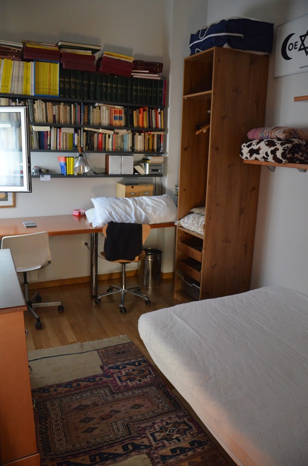
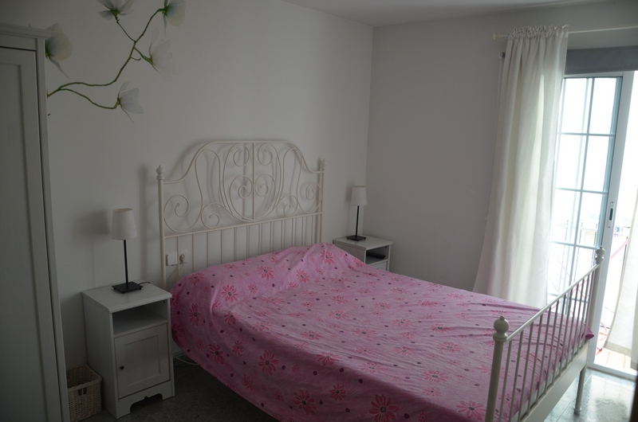
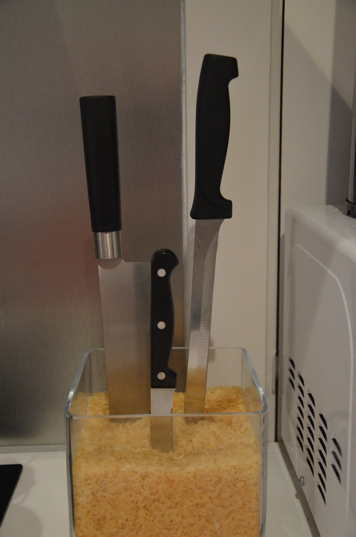
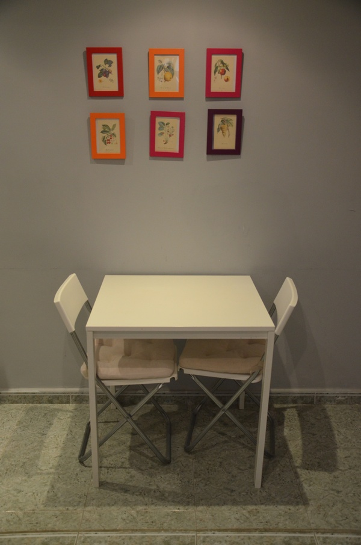
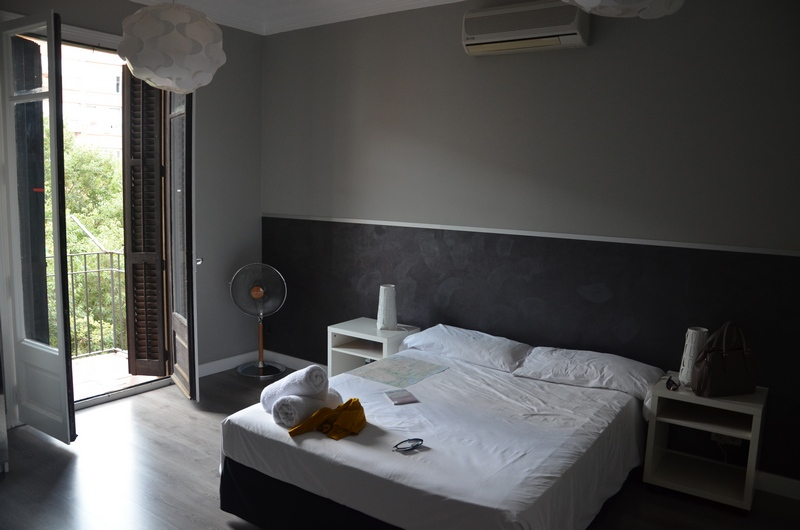
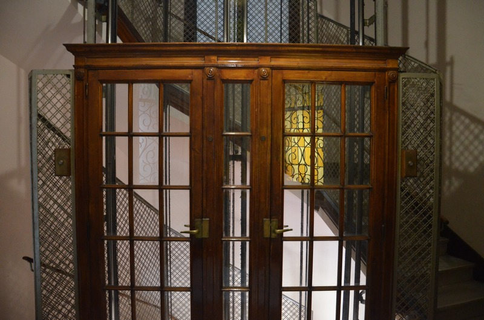
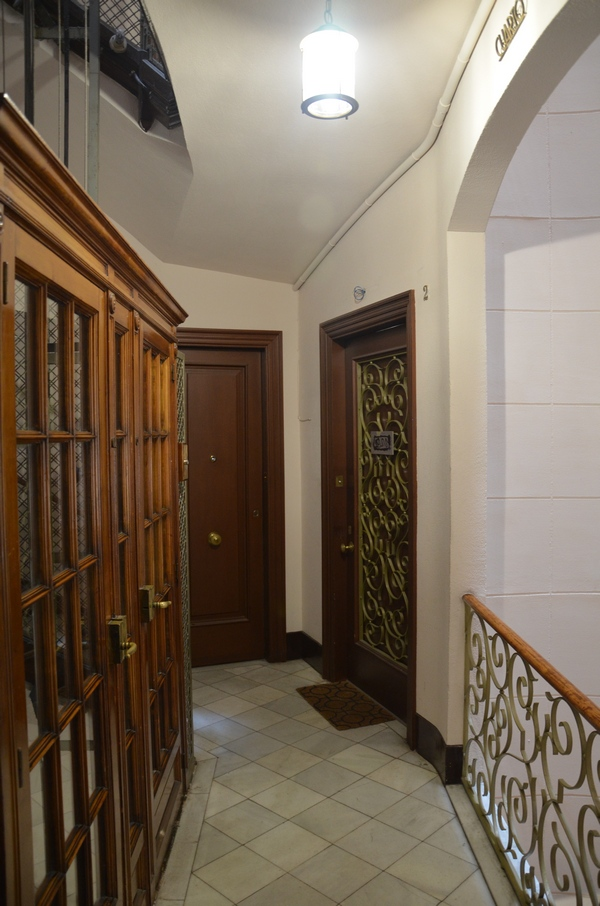

K zážitkům z dovolené se hodí zmínit i něco málo o ubytování. Letos jsme se poprvé rozhodli vyzkoušet něco nového, a sice Airbnb. Jedná se o americkou službu, která zprostředkovává ubytování v soukromí. Můžete si tak pronajmout celý byt třeba i s kuchyňkou a často vás to vyjde dokonce i levněji než hotel – záleží však samozřejmě na konkrétní destinaci i vašich požadavcích. Vzhledem k tomu, že mám ke všem alternativnějším způsobům cestování dost nedůvěru, nebyla jsem o Airbnb zpočátku tak úplně přesvědčená, přestože jsem na ně slyšela jen chválu. Zkusit se má ale všechno a navíc jsme si chtěli na dovolené hodně vařit z čerstvých surovin, a tak jsme se rozhodli zarezervovat tři byty s kuchyňkou.
První ubytování jsme si našli u paní Pilar v Gironě. Jednalo se pouze o jednu noc, a tak nám bylo celkem jedno, kde přespíme. Byt paní Pilar se nacházel nedaleko nádraží, což pro nás byla ideální lokalita. Pilar byla jednoduše skvělá :-)! Dorazili jsme někdy v deset večer, byli jsme očekáváni a byteček vypadal prima. Pilar obývala spodní patro a naše ložnice i koupelna byly v tom horním. Ještě večer jsme se dozvěděli spoustu informací o Gironě, dostali k zapůjčení mapku města a jako bonus pár tipů, co bychom měli navštívit nebo kde bychom se mohli najíst. Ložnice byla malá, ale bylo v ní všechno, co jsme mohli potřebovat, připojení k internetu fungovalo bez problémů a na druhý den jsme navíc mohli zůstat tak dlouho, jak jsme chtěli, protože Pilar další hosty neměla.

V bohaté knihovně paní Pilar najdete i Milana Kunderu ;-)
Naladěni touto příjemnou zkušeností jsme se těšili na byt číslo 2 v Blanes. Tady nás měla ubytovat paní Chiara. Byt jsme opět celkem bez problémů našli, ale když jsme zazvonili, nikdo nám neotvíral :(. Vzhledem k tomu, že dům se nacházel v docela prudkém kopci a měli jsme s sebou dva kufry, nebylo moc příjemné postávat na ulici. Na naše zvonění nám posléze přišel otevřít Chiařin soused, sympatický pán, který se nám snažil pomoct a dal nám telefon na manžela Chiary, který pracoval v restauraci na pláži. Nakonec se nám podařilo spojit přímo s Chiarou a museli jsme si pro klíče od bytu dojít za jejím manželem. Kufry jsme se rozhodli nechat u souseda – byť sympatického, ale naprosto cizího člověka. Nakonec však všechno dobře dopadlo a z bytečku jsme byli hrozně nadšení :-)!

Ubytování u Chiary
Byl opravdu krásný, útulný a výborně vybavený. Hlavně kuchyňka byla perfektní. Nádobí tam sice bylo poskrovnu, ale toustovač a kávovar i s kávou se docela hodily, stejně jako pár základních surovin k vaření ;-). V bytě se mi také moc líbilo několik hezkých dekoračních detailů, kterými se rozhodně nechám inspirovat i u nás doma. Celkově hodnotím bydlení v Blanes jako jednoznačně nejlepší z celého pobytu.

Nože zapíchnuté v misce s rýží

Obrázky ze starých knížek + barevné rámečky z IKEA = dekorace za pár kaček
Po ne zcela stoprocentní druhé zkušenosti jsem z bydlení v Barceloně měla už předem obavy (které se posléze ukázaly být oprávněné 8-)…). Přecejen jsme tu měli strávit 7 dní, nejdelší časový úsek. Byt pronajímala nějaká Ruska jménem Ksenia – ta nám ale pár dnů dopředu psala, že v době našeho příjezdu v Barceloně nebude a klíče nám nechá ve schránce v domě. Zpočátku šlo všechno celkem hladce – klíče jsme našli, byt v podkroví také, ale na první pohled to tedy nebyla žádná sláva. Oproti fotkám na Airbnb působilo všechno vybavení dost ošuntěle a špinavě. Miniaturní koupelna se sprchovým koutem vypadala taky dost nechutně, ale když jsem v kuchyni otevřela šuplíky, čímž jsem vyrušila nějaké milé černé broučky, veškerá sranda skončila.
S nepoužitelnou kuchyňkou bychom se asi byli schopní ještě jakž takž smířit – z večerní procházky k nedalekému chrámu Sagrada Familia jsme si přinesli flašku vína a byli jsme rozhodnutí opít se a brouky ignorovat. Bohužel jsme v noci zjistili, že broučci vylézají i ze spár v koupelně a tento fakt nemohlo utlumit ani (mimochodem pěkně hnusné) španělské víno. Abych story zkrátila – rozhodli jsme se rezervaci zrušit a hned na druhý den se přestěhovat jinam. Ksenia s námi do té doby jakžtakž komunikovala přes Whatsup, poté se ale odmlčela a už jsme od ní nedostali prakticky žádné zprávy. Kontaktovali jsme také Airbnb, ale reakce jsme se nedočkali. Začali jsme tedy ještě v noci shánět jinou střechu nad hlavou. Zachránil nás ubytovací komplex Super Tetuan, který se nacházel hned za rohem. Finančně vyšel dokonce ještě výhodněji než naše současné ubytování u Ksenie, takže jsme se dlouho nerozmýšleli a zarezervovali si pokoj.

SUPER Tetuan
Po zkušenosti z bytu Ksenie jsme byli ochotní vzít cokoliv, kde bude čisto. Tetuan nás ale naprosto ohromil – asi tam nahoře dostali pokyn vynahradit nám příkoří z předchozí noci :-D. Dostali jsme krásný prostorný pokoj s balkonem – zařízený velmi jednoduše, ale vkusně. Překrásný secesní interiér domu a stylový výtah můžete zhodnotit na fotkách. Kuchyně i několik koupelen byly společné pro několik pokojů, ale všude bylo čisto a hlavně žádní brouci :D! Byli jsme prostě nadšení.

Výtah, co už se jen tak nevidí

Jako z filmu :)
Asi vás bude zajímat vyústění celého příběhu. Po několika urgencích na Airbnb už jsme byli smířeni s tím, že Ksenia se nám nikdy neozve a peníze za ubytování samozřejmě už taky nikdy neuvidíme. Po návratu z dovolené jsme si začali stěžovat na Airbnb Twitteru a situace se najednou dala do pohybu. Cca po měsíci jsme měli celou sumu (včetně manipulačního poplatku Airbnb) zpátky na účtu a k tomu kredit nějakých 6000Kč jako omluvu za dlouhé čekání. Airbnb toho má teď přes léto prý prostě moc…
Nakonec tedy všechno dobře dopadlo. I tak si ale myslím, že služba, která se ohání „prvotřídním zákaznickým servisem“ (cituji z jejich webu) by měla vědět, že v hlavní sezóně dovolených je potřeba posílit stavy. Z Airbnb mám proto trochu smíšené pocity. Může to být velmi v pohodě a můžete si to stoprocentně užít. Zároveň se ale může stát, že něco v pohodě nebude a vy pak budete muset ve čtyři ráno řešit, kde sehnat nové ubytování. Airbnb vám s tím bohužel nepomůže. Nás nechali dlouho v nejistotě a ozvali se ve chvíli, kdy už jsme v to prostě vůbec nedoufali. Právě proto, že jsme zažili obě zkušenosti - jak pozitivní, tak negativní, nebudu tvrdit, že už Airbnb nikdy nevyzkouším. Ale pokud budu mít možnost se za stejné peníze ubytovat v hotelu, vyberu si radši hotel.
Co vy a Airbnb? Máte s nimi nějakou (lepší) zkušenost :)? Můžete se podělit v komentářích…
Ty noze v ryzi jsou super. Hledal jsem zpusob jak mit ulozene velke noze a tohle pouziju!!! yesss…
jinak airbnb je super - ja ho urcite priste pouziju znova.
Díky za článek.
Já určitě Airbnb doporučuji, je třeba k tomu přistupovat selským rozumem, vědět co chci a také mít na paměti, že kdyby náhodou nastala nějaká “situace” je tady vždy centrála Airbnb, která mi ji pomůže vyřešit ke spokojenosti obou stran.
Airbnb jsme využili několikrát i mimo Evropu - Mauricius a Bali a bylo to vždy bez problémů.
Přeji krásné chvíle strávené cestováním! :)
Krásné dny, Iva